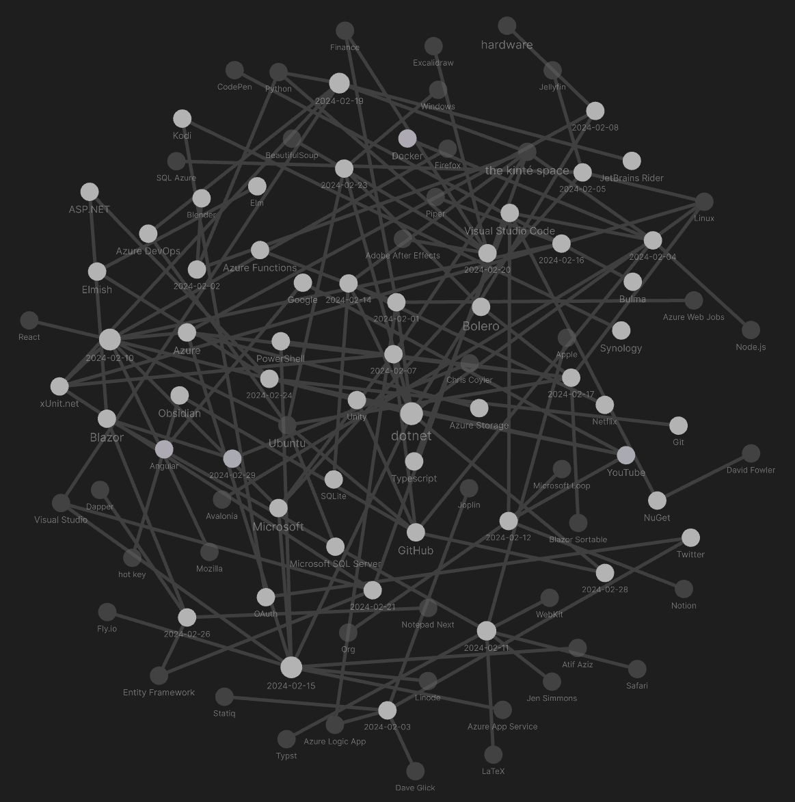

studio status report: 2024-02
month 02 of 2024 was about releasing Songhay.Player.YouTube release 6.3.0 📦🚀
It is almost totally awesome that the Songhay.Player.YouTube release 6.3.0 📦🚀 project was completed in month 02. But, as the developer story goes, there is still more shit to do: I need to add the Presentation player that is currently used on kintespace.com to present curated stuff like my “blacktronic collection.” Yet another project for Songhay.Player.YouTube will be needed as I simplt forgot to include this work in the last project 😐
I likely forgot because there was so much going on for me in month 02 as the Obsidian graph shows:

Inside of the tangle above are some selected notes:
the [[Azure Logic App]] HTTP Connector is not designed to “fire and forget” #day-job
Even though the HTTP Connector has asynchronous features, it is expecting a 202 response at the very least within two minutes (because that is the default [[Azure Logic App]] wait time [📖 docs ]). In “Calling long-running Functions from Logic Apps,” Jeff Hollan (2017) details two patterns to work around this lack of default features:
The first pattern is “polling” — where the endpoint returns an immediate 202 response with a location header that points to a status endpoint. The logic app will then continue to poll the location header until a 200 response code is returned.
…
The second pattern is “webhook” based — where the logic app provides a callable endpoint to notify when the work is completed. Both patterns are well documented (including a nice analogy of ordering cakes) in this article if you are looking for more info/samples.
Although, the second pattern looks ‘easy,’ Hollan warns:
The endpoint (my function) needs to return (within 2 minutes) a response so that the logic app knows the request succeeded
[!important] Both of these patterns, require a 202 response.
That second pattern involves using a message queue (and orchestrated [[Azure Functions]] should work as well)—in both cases, a micro-services-friendly rewrite is required.
[!important] …the requirement of a 202 response is the “gateway drug” into building bona fide micro-services…
[[Songhay Publications]]: “The stack: An introduction to the WARC file”
A WARC (Web ARChive) is a container file standard for storing web content in its original context, maintained by the International Internet Preservation Consortium (IIPC).
[[Visual Studio Code]]: the C♯ Dev Kit

Packing light with VS Code and the C# Dev Kit | .NET Conf 2023
[[GitHub]] Actions is about running [[Node.js]] from a [[Docker]] container
This video introduces to me why using JavaScript for general-purpose “actions” is not the greatest idea:

GitHub Actions Feels Bad
The following video takes this matter slightly more seriously:

GitHub Actions Crash Course
[[SQL Azure]]: the DELETE SQL statement that can ruin your day #day-job
The following DELETE statement will eagerly delete rows instead of ‘do the right thing’ and fail:
DELETE FROM [dbo].[TARGET_TABLE]
WHERE [OTHER_TABLE_ID] IN (
SELECT [INVALID_COLUMN]
FROM [dbo].[OTHER_TABLE]
WHERE [REFERENCE_NAME] = 'my_ref_name'
)
[!warning] The
SELECT [INVALID_COLUMN]sub-query in theINclause will not fail and stop theDELETEcommand from running.
Instead, [[Microsoft]] decided to allow the DELETE operation to remove all the rows from [TARGET_TABLE] 😐
The only defense against this approach is to replace the DELETE FROM with SELECT * FROM to test the effects of the proposed DELETE.
[[dotnet|.NET 8.0]] has a FakeTimeProvider
If we now want to test our code we can use the Microsoft.Extensions.TimeProvider.Testing package. This includes a
TimeProviderimplementation calledFakeTimeProviderwhich gives us explicit control over the flow of time.
they are still writing “Why you don’t need [[React]]” articles 😐
Another project popular in the OSS/Devops space is Kubernetes. Often you'd see a lot of articles saying "You are not Google", or "You don't have Google scale problems", as a counter to startups going all in on Kubernetes.
There's a similar problem with React but much less visible.
- You are not Facebook.
- You do not have Facebook level problems.
The complexity that comes with React is beyond the needs of the majority of projects. Adding a view library is helpful, but with it these days comes state management, routing, graphql, SSR, hot reloading, CSS-in-JS, and just mountains and mountains of related things just to get your app running.
[[Jen Simmons]] talks about color, new controls and how the [[WebKit]] inspector measures energy usage

Safari is the new Chrome - Jen Simmons of Apple
[[Jen Simmons]] informs me that any of the classic ways to specify color in the browser all default to the sRGB color space; however, there are new functions for other color spaces:
- sRGB color space:
hsl(),hwb(),rgb(); - CIELAB color space:
lab(),lch(); - Oklab color space:
oklab(),oklch();
FsHttp in a *.fsx file is the next level after static *.http file
This video is from the same [[YouTube]] channel as a video on the FsHttp readme:

THE POSTMAN KILLER - A Hackable HTTP Programming Environment
[[Microsoft Loop]] is [[Notion]] mixed with OLE
Remember OLE? This video should be déjà vu:

Is Microsoft Loop the End of OneNote?
“JSON and JSONB support in [[SQLite]]”
A big new feature is introduced in the SQLite 3.45.0 release – the SQLite JSONB. The aim of this feature is to speed up the JSON manipulation, since storing JSON as BLOB will save time normally spent on parsing the standard JSON saved as string. The JSONB object consists of a header and a body. The header of each element stores its properties, like size or type. Knowing the size of the JSON element speeds up its parsing; eliminating the need of searching for the next delimiter. SQLite offers various functions for JSONB handling. Many standard JSON functions have their JSONB equivalent, like the jsonb() function, which returns a JSONB object, or jsonb_extract(), extracting values from a JSONB blob. Many standard JSON functions can also take JSONB blob as a parameter.
—https://fedoramagazine.org/json-and-jsonb-support-in-sqlite-3-45-0/
“The Case Against Clean Architecture”
![Jeremy Miller on The Case Against Clean Architecture [EPISODE 788]](https://img.youtube.com/vi/XWbMked7JZ8/hqdefault.jpg)
Jeremy Miller on The Case Against Clean Architecture [EPISODE 788]
From my side, I’d say the issues are:
- A harmful focus on prescriptive rules that don’t actually help software teams succeed over time
- A lack of adaptation caused by prescriptive rules
- Organizing code first by layers, technical stereotypes, and business entity
- Technical coupling within a layer actually leading to problems upgrading codebases
- Too much emphasis on using abstractions and mock object libraries to create testability
[[dotnet|.NET]] 9 will be about up-selling more AI and more “cloud-native” development
Our goal is to make .NET development more productive using Visual Studio, Visual Studio Code with the C# Dev Kit, and cloud deployments easier using Azure services. We’ll continue to work closely with our industry partners, like Canonical and Red Hat, to ensure that .NET works great wherever you use it.
“What is the [[Azure]] Developer CLI?”
Azure Developer CLI (
azd) is an open-source tool that accelerates the time it takes for you to get your application from local development environment to Azure.azdprovides best practice, developer-friendly commands that map to key stages in your workflow, whether you're working in the terminal, your editor or integrated development environment (IDE), or CI/CD (continuous integration/continuous deployment).
[[Blazor Sortable]] does not HTML5 Drag and Drop?
Why not HTML5 Drag and Drop?
Fair question and one that I certainly looked into before going to a JavaScript solution. The long and short of it is that the native HTML5 support for drag and drop simply isn’t robust enough for a decent sortable. For instance, there is no way to style much of the behaviour of the drag and drop. It looks…goofy…and there isn’t anything you can really do about it. It also has pretty flaky support across browsers. There are some essential properties that only work in Chrome.
[[xUnit.net]]: “Prefer test-doubles over mocking frameworks”
First, a quick recap of the differences and what they give us:
- Mocking frameworks, like Moq or NSubstitute in .NET, create proxy instances of classes or interfaces at runtime. They offer the ability to define the behavior of these proxies, such as specifying the return values of methods or properties, and can also record and verify interactions such as method calls.
- In-memory test doubles, are types that we write that have in-memory behavior of something that would otherwise have side effects, for example, writing to a database, file system, or any other external system or service. I'll refer to these as just test doubles going forward.
[!question] Can test doubles help standardize and automate test input? #to-do
[[Entity Framework]]: there is no longer a need to manually run and ‘sniff’ the network to get framework-generated SQL 👃🛑
“Entity Framework View Generated SQL” does not refer to EF Core which means that there is no System.Data.Objects.ObjectQuery as shown in the article:
using (var context = new EntityContext())
{
var query = context.Customers.Where(c => c.Id == 1);
var sql = ((System.Data.Objects.ObjectQuery)query).ToTraceString();
}
Instead, there is System.Data.Entity.Core.Objects.ObjectQuery [📖 docs ] for in EF Core.
The other, more passive way mentioned in the article involves the DbContext.Database.Log property—the Database property is an instance of DatabaseFacade. Again, in EF Core, there is no Log property for Microsoft.EntityFrameworkCore.Infrastructure.DatabaseFacade [📖 docs ]—the DbContextOptionsBuilder.LogTo method [📖 docs ] is used instead.. See “Simple Logging” 📖
[[dotnet|.NET]]: Ian Griffiths supports my investment in walking JSON documents instead of serializing
Ian Griffiths supports my investment in two ways—first, is this quote:
You might find this a little less convenient than conventional serialization, in which we define a .NET type whose structure resembles the JSON we expect to see, and then use JsonSerializer.Deserialize to convert the JSON into an instance of that type. But if you're familiar with these APIs (or you've watched and read the video and blogs linked to above) you'll know that the approach shown here places a much lower load on the garbage collector, and that it has the potential to provide much higher throughput in high-performance systems.
Second, is his ‘up-sell’ to Corvus.JsonSchema [🔗 GitHub ] #to-do
[[Blazor]]: “The FAST and the Fluent: A Blazor story”
It is not necessary to use a framework to work with FAST components, but you can (and should). Combining them with the desired framework or library will almost always be easier. Since the beginning of 2020, there has been a broad adoption of web components. Not only Microsoft is investing heavily in the technology, but Google, Adobe, Salesforce, SAP, MIT, SpaceX, and many others are doing the same. For more information, see https://www.fast.design/.
…
Fluent is the design system that Microsoft uses for all its modern applications, both for the web and for Windows (OS and applications). The origin of Fluent can be found in “Metro”, the design system used for the Zune music player and Windows Phone devices (yeah, I still miss them too!). The system contains guidelines for the designs and interactions used within software. It has a foundation which is formed by five key components: light, depth, motion, material, and scale. Recently, the latest version, Fluent 2, was released. For more information, see https://fluent2.microsoft.design/.
sketching out development projects
The current, unfinished public projects on GitHub:
-
replacing the Angular app in
http://kintespace.com/player.htmlwith a Bolero app 🚜🔥 depends on: -
start the “
Songhay.Publications.Models6.0.0” 📦🚀 project -
completing the
Songhay.Publications6.1.0 📦🚀 project
The proposed project items:
- add Entity Framework (over SQLite) features to
Songhay.Publications - generate Publication indices from SQLite for
Songhay.Publications.KinteSpace - generate a new repo with proposed name,
Songhay.Modules.Bolero.Index✨🚧 and add a GitHub Project - switch Studio from Material Design to Bulma 💄 ➡️ 💄✨